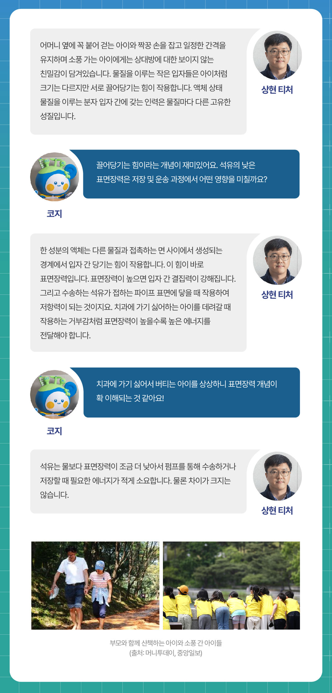
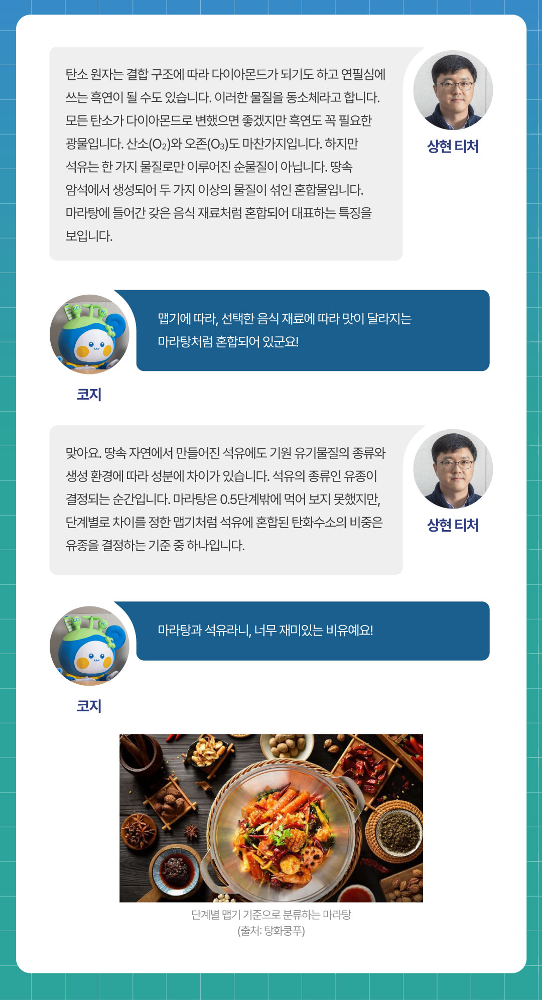
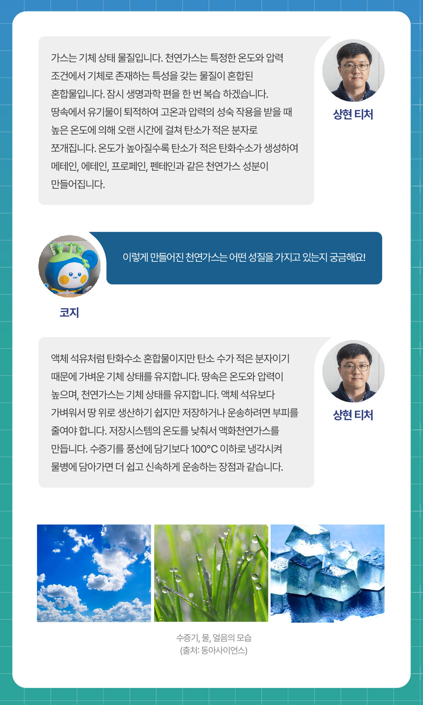
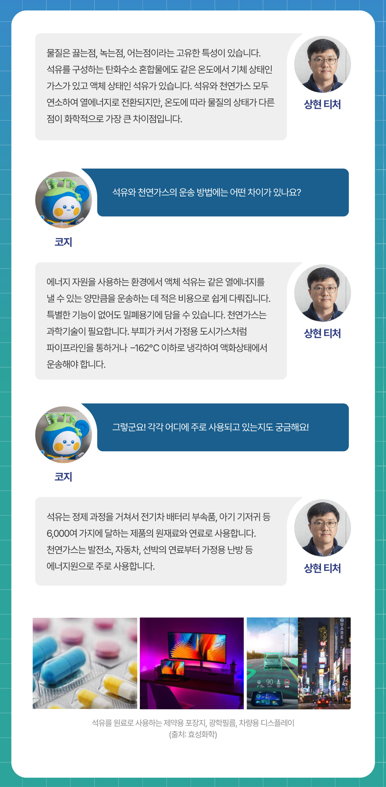
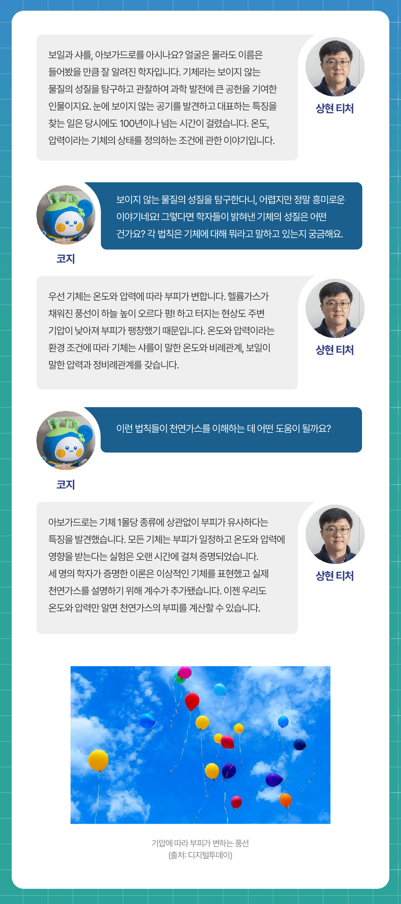
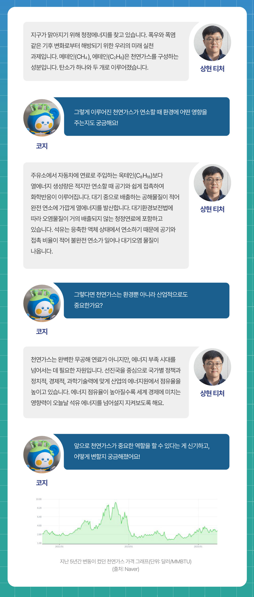
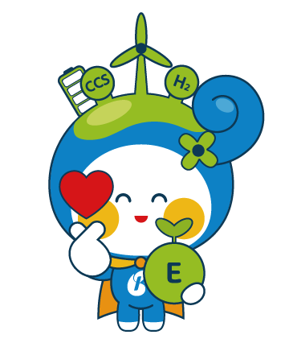

알쓸유잡 시즌2, 어느덧 네 번째 시간입니다. 지난 시간에는 ‘지구과학 2편 ? 석유의 자원량과 매장량’을 주제로, 석유의 양과 관련된 다양한 이야기를 상현 티처와 함께 알아보았죠. 이번 시간은 <화학편 ? 석유와 천연가스 이야기>입니다. 석유와 천연가스는 어떻게 만들어지고, 어떤 성분으로 이루어져 있을까요? 또 정제 과정을 거쳐 어떻게 다양한 연료로 변신하는 걸까요? 교과서에서는 미처 다루지 못한, 석유와 천연가스의 화학적 원리를 흥미롭게 풀어드립니다. 상현 티처와 함께 석유와 천연가스의 세계로 한 걸음 더 들어가 볼까요?
Q1. 지역에 따라 원유의 성질(색상, 점도, 냄새 등)이 조금씩 다를 것 같아요. 이런 차이는 왜 생기는 건가요?

Q2. 석유는 물이나 다른 액체와 비교해 표면장력이 낮은 편이라고 하죠. 표면장력은 어떤 개념인가요?

Q3. 석유의 종류(유종)는 왜 다양할까요? 그 기준은 무엇인가요?

Q4. 천연가스는 어떻게 만들어지며 어떤 물질인가요?

Q5. 석유와 천연가스는 어떤 점이 다른가요?

Q6. 보일·샤를·아보가드로 법칙은 기체의 성질을 이해하는 핵심 법칙들이죠. 이 법칙들을 바탕으로 천연가스의 특성을 어떻게 설명할 수 있을까요?

Q7. 천연가스는 왜 청정에너지로 분류되나요?

오늘은 상현 티처와 함께 <화학편 ? 석유와 천연가스 이야기>를 살펴보았습니다. 석유와 천연가스 각각의 특성과 차이점을 다양하게 알게 되어 무척 흥미로운 시간이었습니다. 다음 호에서도 더욱 재미있고 유익한 석유 이야기를 들려드릴 테니 많은 기대 부탁드립니다.

아래의 카드를 클릭해보세요!
지역마다 원유의 성질이 왜 다른 걸까?
석유를 구성하는 탄화수소는 탄소 원자와 수소 원자가 결합한 분자인데, 서로 다른 자연환경 속에서 탄소와 수소가 다양한 개수와 구조로 결합하기 때문이란다.
표면장력이 낮다는 건 어떤 의미일까?
표면장력이 낮으면 입자 간 결집력이 약해진단다. 석유는 물보다 표면장력이 조금 더 낮아서 수송하거나 저장할 때 필요한 에너지가 적은 편이야!
석유와 천연가스의 운송 방법은 어떻게 다를까?
액체 석유는 적은 비용으로 쉽게 운송이 가능하단다. 기체 상태인 가스와 달리 특별한 기능이 없어도 밀폐용기에 담을 수 있지.